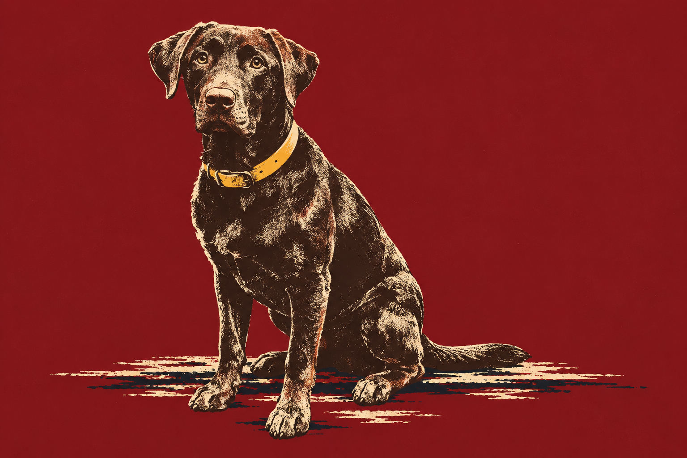
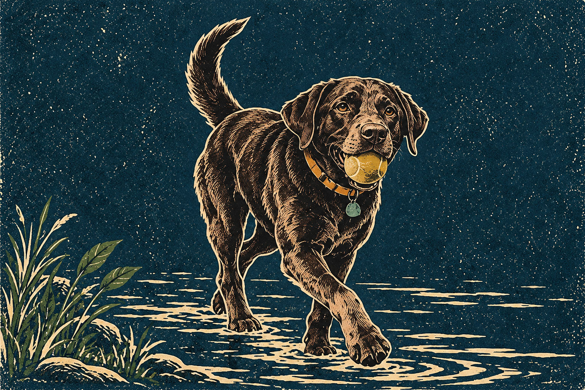
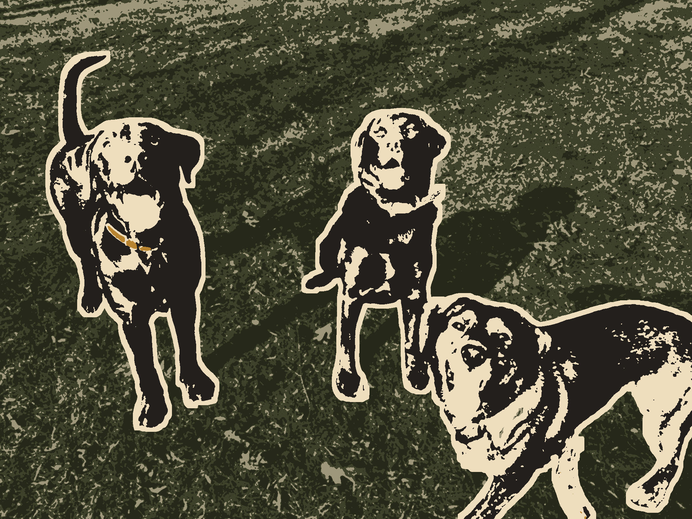
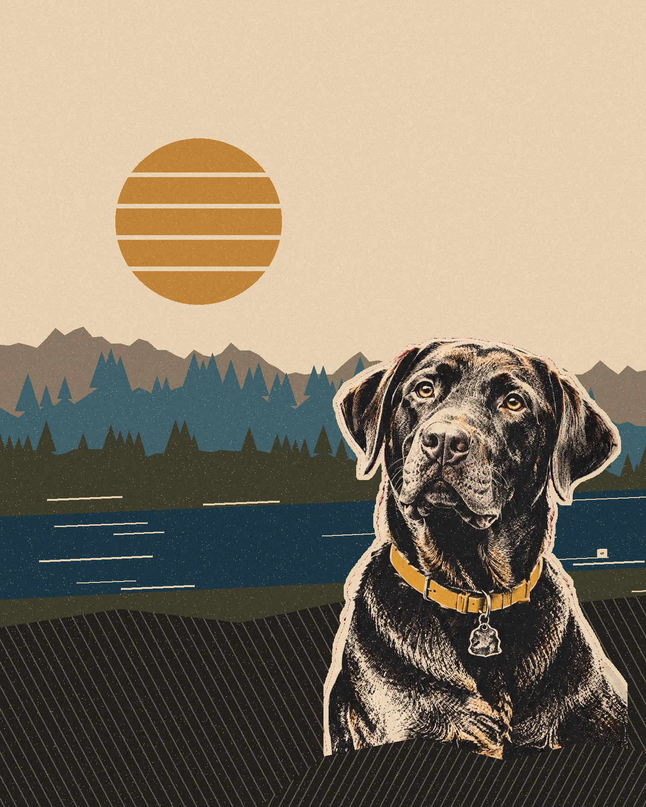
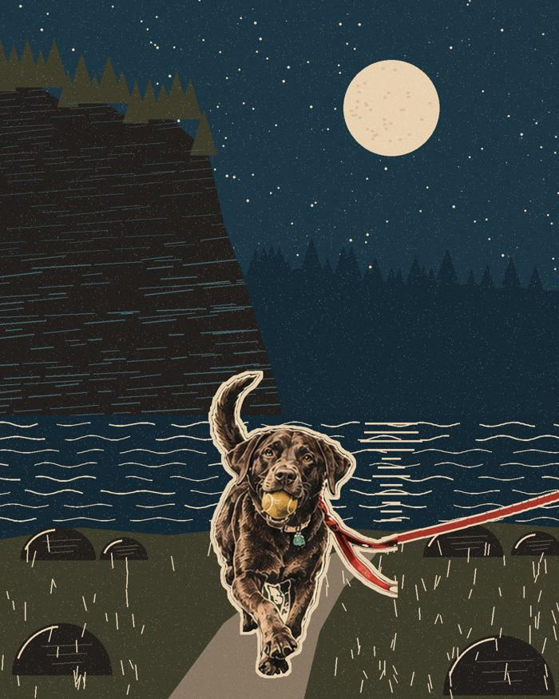
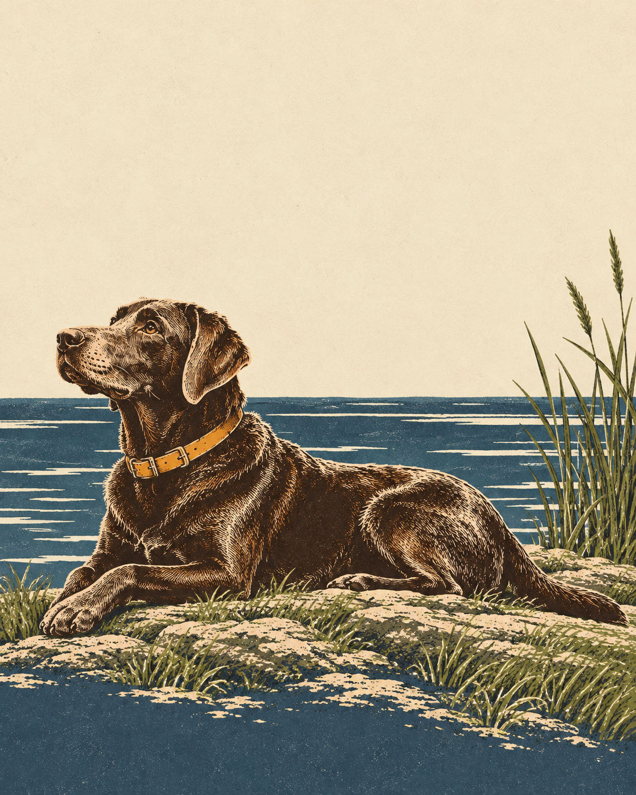

Archive
11 collected prints
Plate Register
Original editorial illustrations, in order of publication. These prints accompany the outings; they are not documentary records of places or visits. Select a print to look closer.


TRA Plate No. 001
Cox Mountain and the Fews Ford Crossing
Recommendation withdrawn · Historical plate


TRA Plate No. 002
Hillsborough Riverwalk and Gold Park


TRA Plate No. 003
Company Mill and the Old Dam on Crabtree Creek


TRA Plate No. 004
Occoneechee Mountain and the Quarry Overlook


TRA Plate No. 005
Raven Rock and the Stairs Down to the Cape Fear

TRA Plate No. 006
Hanging Rock, at Rupert’s Pace

TRA Plate No. 007
New Hope Overlook and the Shorter Lakeside Loop

TRA Plate No. 008
Great Blue Heron, at a Labrador’s Pace

TRA Plate No. 009
A Small Loop Among the Longleaf Pines

TRA Plate No. 010
Long Valley Farm, Beyond the Field Edge


TRA Plate No. 011